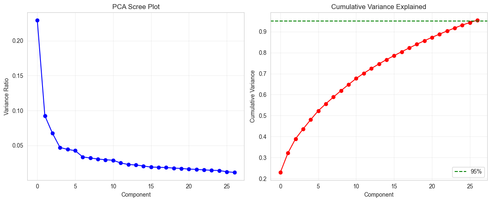
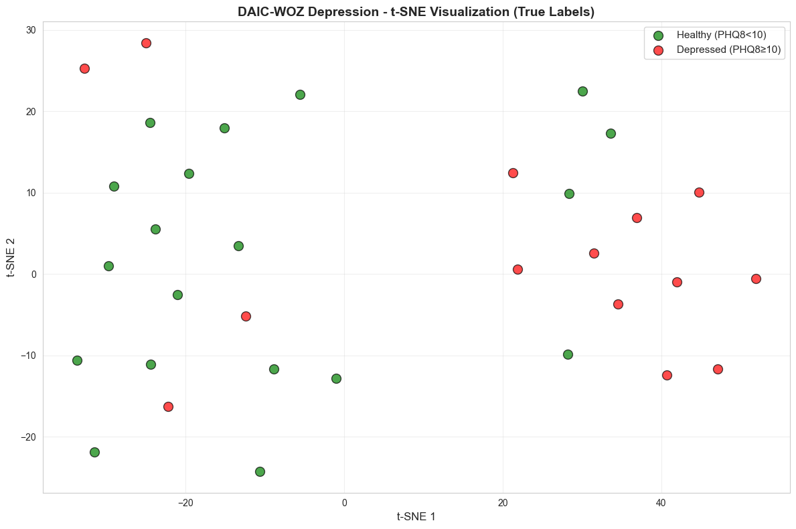
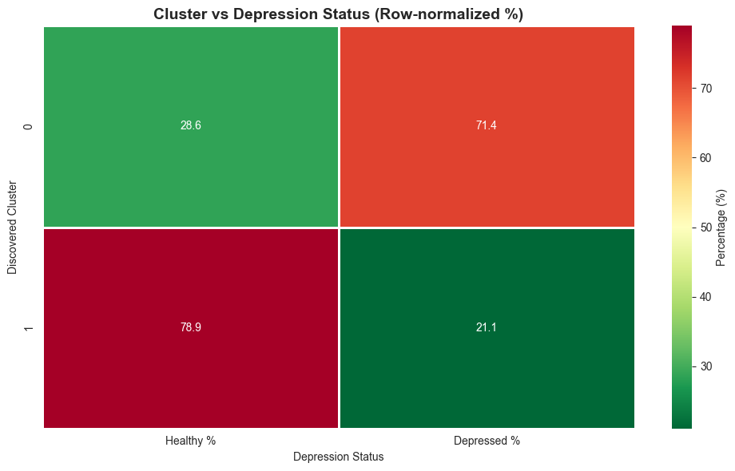
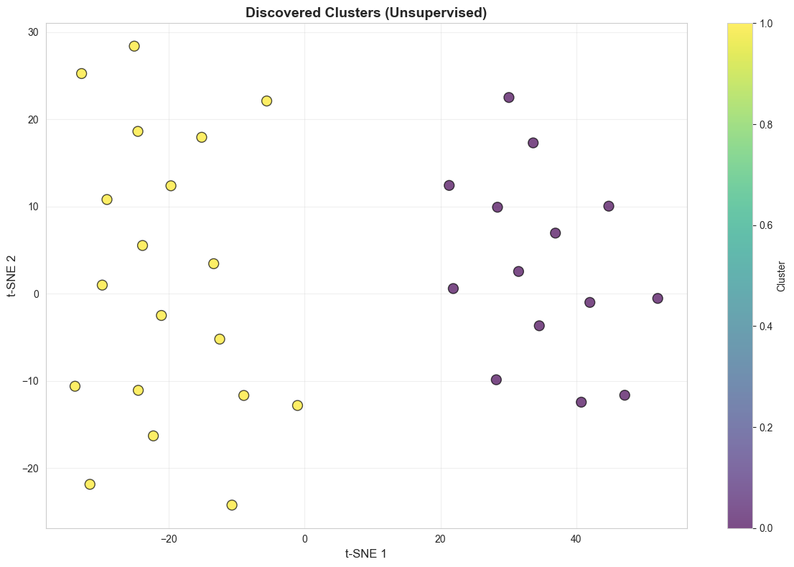

Visualizations & Analysis
PCA Variance Analysis

27 components retain 95.4% of variance (396 → 27 dimensions)
t-SNE by Clinical Labels

Green: Healthy (PHQ8<10), Red: Depressed (PHQ8≥10)
t-SNE Discovered Clusters

Unsupervised K-Means clustering (k=2)
Cluster vs Depression Status

χ² = 6.44, p = 0.0112 (significant correlation)
Clustering Metrics

Elbow method and silhouette score optimization (k=2 optimal)
View complete analysis and visualizations in the Jupyter Notebook